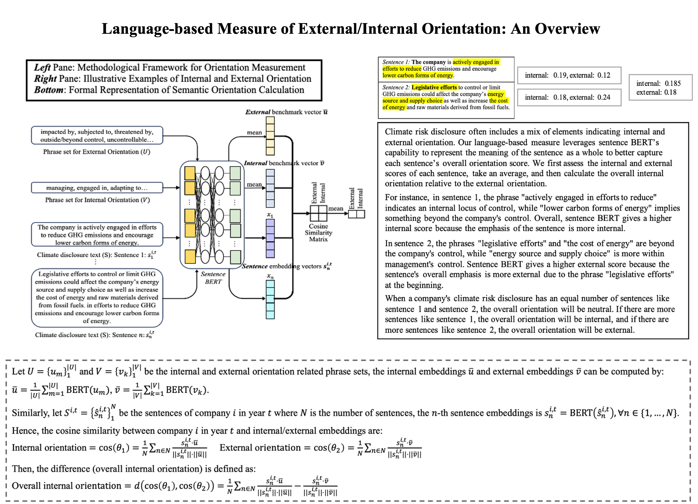
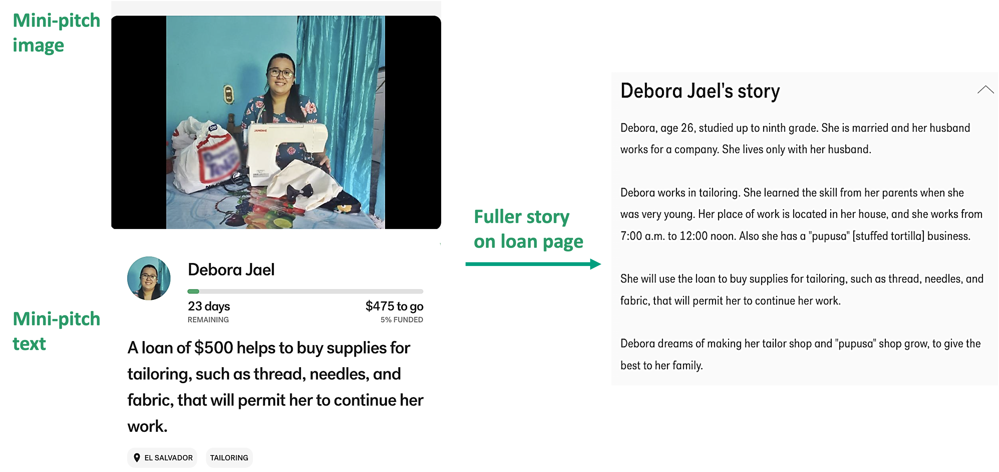
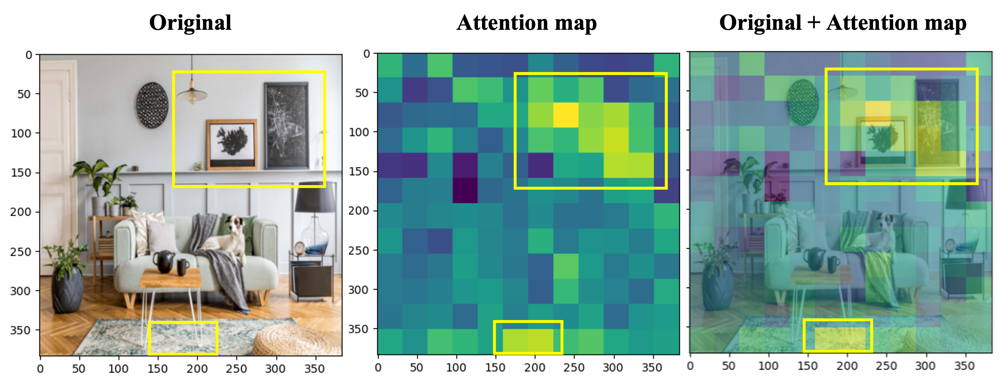
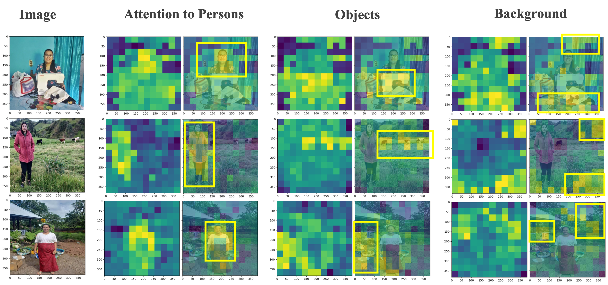
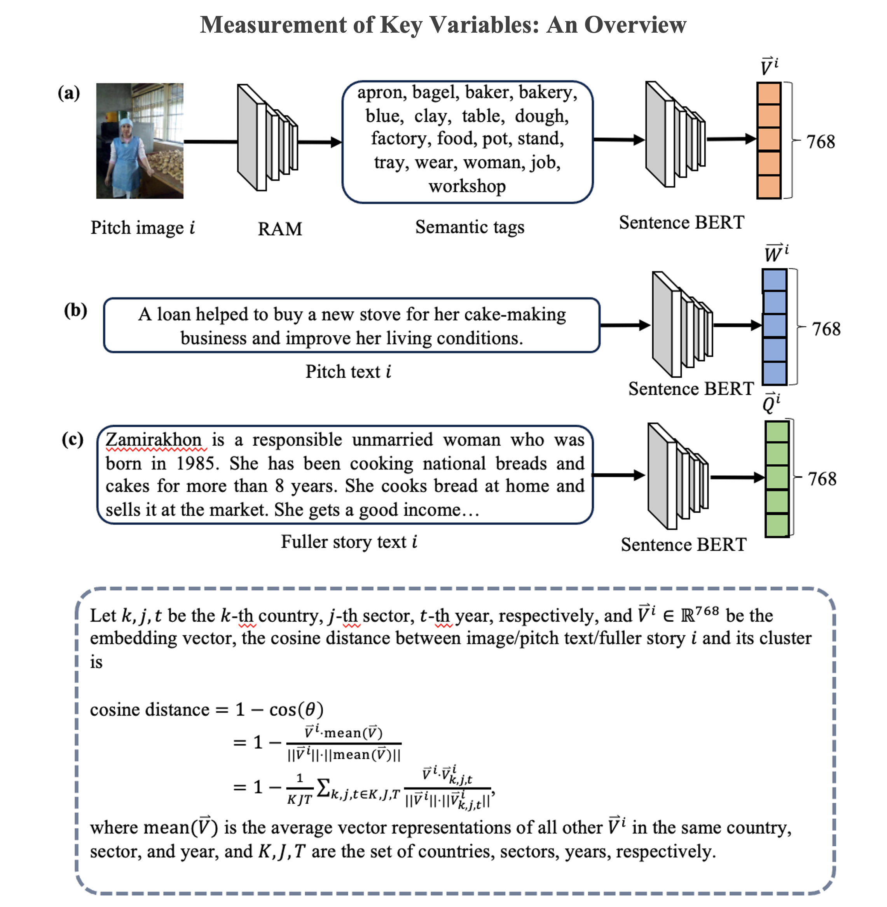

It’s (Not) Our Problem: How Management’s Construction of Climate Risk Affects ESG Ratings
Abstract: How do voluntary climate-related disclosures affect third-party ratings of
environmental, social and governance practices (ESG)? By revisiting
attribution theory and extending the attributional lens to future-oriented
domains, we posit that such disclosures not only transmit information
about risk exposure but also reveal managers’ attributional stance—the
extent to which management interprets an issue as lying within or
beyond an organization’s influence. Building on organizational attribution
and climate change discourse literature, we theorize that internal
attributions of control convey competence and accountability, leading to
more favorable environmental strength ratings. Furthermore, we propose
that the effect of control attributions depends on three contingencies: the
subtext through which disclosures are conveyed, the environmental
context in which they are interpreted, and the relative materiality of a
firm’s climate risks. Using a novel dataset of U.S. firms’ climate risk
disclosures (2009–2019) and employing Sentence-BERT, a state-of-the-
art method for capturing sentence semantics, we find support for these
predictions. By shifting attention from disclosure accuracy and
transparency to attributional stances embedded in disclosure, we show
how climate risk disclosures constitute a doubly interpretive process in
which managers and evaluators jointly construct assessments of
organizational responsibility and outcomes under uncertainty.

Crowdfunding “Postcard”: The Role of Visual Congruence and Verbal Distinctiveness
Abstract: Entrepreneurial narratives play a critical role in mobilizing resources, especially for social ventures engaging impact-driven audiences. While increased attention has been paid to entrepreneurial stories shared through online platforms, existing literature has largely overlooked the audience’s sequential engagement with these stories and their multimodal composition. Building upon the concept of optimal distinctiveness and theories on communication modes, we theorize how the distinctiveness of visual and textual elements differ in appealing to the audience. Furthermore, we theorize the relative impact of an initial miniature story—the succinct entrepreneurial story usually leveraging visuals along with verbal text to communicate the essence of an entrepreneurial endeavor—compared to a subsequent fuller story. Analyzing borrowing campaigns pitched on Kiva over 16 years, both mini-pitches (in the form of image-text pairs) and fuller descriptions, we find that visual category congruence and verbal category distinctiveness are positively related to funding success, but only verbal category distinctiveness leads to faster funding. Moreover, we find that mini pitches have a greater impact on accelerating the funding process than fuller stories. Our findings caution against assuming that audiences equally engage in each fuller entrepreneurial story and assuming visual and verbal modes of entrepreneurial narratives have similar impacts on audience support.

The example below shows Transformer-based architecture's capability to capture visual semantics that go beyond object categories. The attention map highlights both the wall images and the centerpiece of the carpet, even though they belong to different object categories. This unexpected focus suggests that the model is recognizing a deeper semantic similarity between these elements, viewing them as 'picture-like' attributes.

Here are more examples of attention maps that highlight persons, objects, and backgrounds.


